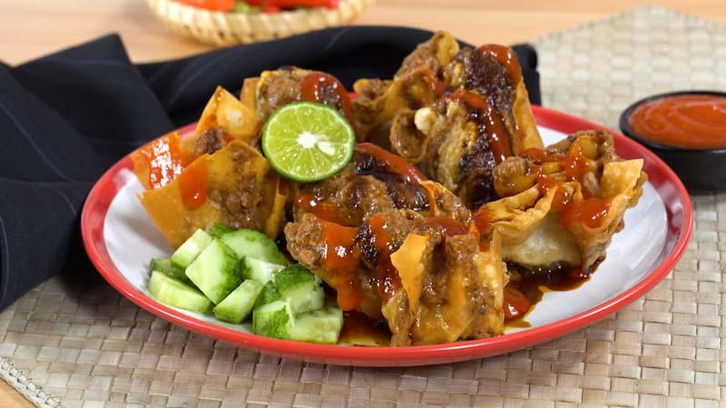

Batagor Bandung

Batagor is a dish made from tofu.
Batagor Bandung is a very popular street food found around the Sunda region of Western
Java. Batagor is an acronym for Bakso Tahu Goreng (Fried Tofu Balls) though it's not
really a ball, but more of a triangle shape. The tofu is stuffed with a mixture of
savory ground meat, steamed, and then coated with batter and fried; it is served with
a spicy sweet chile-peanut sauce.
Ingredients
- 4 (8 ounce) containers tofu
- ½ cup prawns - peeled, deveined, and minced
- 1 egg, lightly beaten
- 1½ ounces ground chicken
- 1 green onion, chopped
- 2 teaspoons cornstarch
- 1 teaspoon sesame oil
- salt and ground white pepper to taste
Batter:
- 1 egg
- 6 tablespoons all-purpose flour
- cold water, or as needed
Sauce:
- ⅓ cup water
- ¼ cup coarsely chopped dry roasted peanuts
- 1 fresh red chile pepper, finely chopped
- 2 cloves garlic, minced
- 2 teaspoons white vinegar
- 1 teaspoon white sugar
- 1 teaspoon salt
- oil for frying
Directions
-
Slice each tofu square diagonally to make 8 triangles. Make a cut into the
base of each tofu triangle and scoop out enough of tofu to create a pocket.
-
Combine scooped-out tofu pieces, prawns, egg, ground chicken, green onion,
cornstarch, sesame oil, salt, and pepper in a bowl for the filling. Carefully
stuff filling back into the tofu triangles; the filling will bulge out.
-
Place a steamer insert into a saucepan and fill with water to just below
the bottom of the steamer. Bring water to a boil. Add stuffed tofu triangles,
cover, and steam for 20 minutes.
-
Meanwhile, make the batter. Mix egg and flour in a bowl. Whisk in enough water
to give batter a medium-thin consistency.
-
Combine water, peanuts, red chile pepper, garlic, vinegar, salt, and sugar
in a bowl. Stir until salt and sugar have dissolved and set sauce aside.
-
Remove cooked tofu triangles from the steamer.
-
Heat oil in a wok until hot. Dip triangles into the batter and slowly lower
into the hot oil. Fry in batches until golden brown and the batter is cooked
through, about 5 minutes. Drain on paper towels. Serve hot with the peanut
sauce.
Return to Homepage